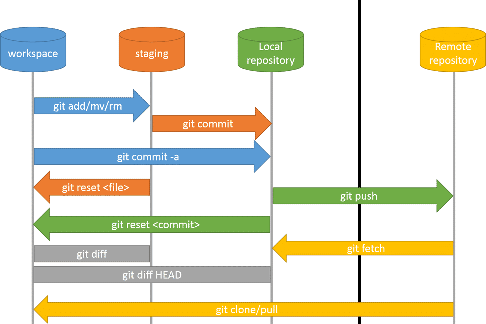

Git
Es la herramienta que crea commits y mantiene el historial en tu ordenador, incluso sin conexión.
2 · GitHub y remotos · WIP
Llevamos el historial local de Git a un espacio web para conservarlo, consultarlo y compartirlo.
0 · Contextualización
GitHub es una plataforma web que aloja repositorios Git. Apareció en 2008 y se popularizó porque permite ver el historial de un proyecto, compartirlo y colaborar desde el navegador.
Es la herramienta que crea commits y mantiene el historial en tu ordenador, incluso sin conexión.
Es el repositorio remoto que recibe una copia del historial y añade una interfaz web, permisos, Pull Requests, Pages y Actions.
Publicar de forma segura el repositorio local para poder revisar archivos, cambios y versiones.
GitHub guarda una copia del repositorio y de su historial. No sustituye Git: ambos deben estar sincronizados.
Permite leer archivos Markdown, explorar commits, comparar cambios y consultar quién hizo cada modificación sin abrir la terminal.
Permite compartir un proyecto, gestionar permisos y revisar propuestas de cambio cuando haya varias personas trabajando.

Antes de empezar una sesión de trabajo compartida, usa git pull. Al acabar, revisa
git status, crea el commit y usa git push.
1 · Cuenta personal
2 · Repositorio remoto
Desde GitHub selecciona New repository y crea un repositorio llamado
DAW2_M08_NombreApellido, por ejemplo DAW2_M08_MariaGarcia.
Puede ser público si no contiene datos sensibles. Si es privado, tendrás que dar acceso al profesorado antes de que pueda revisarlo.
No marques «Add a README», «Add .gitignore» ni licencia: ya existe un repositorio local y queremos publicar su historial sin conflictos.
Copia la URL HTTPS que GitHub muestra al crear el repositorio.
3 · Primer push
Abre la terminal dentro de la carpeta que ya contiene perfil.md, chuleta-git.md
y los commits creados en la actividad anterior.
git remote add origin URL_DEL_REPOSITORIO
# Conecta el repositorio local con la URL HTTPS de GitHub.
git remote -v
# Comprueba que origin apunta a la dirección correcta.
git branch -M main
# Asegura que la rama principal se llama main.
git push -u origin main
# Envía todos los commits locales a GitHub y configura el seguimiento remoto.Si GitHub abre el navegador, inicia sesión allí. Nunca escribas una contraseña o token dentro de un archivo del proyecto.
4 · Comprueba el resultado
perfil.md y chuleta-git.md.git log --oneline.perfil.md: GitHub lo muestra automáticamente como un documento Markdown.Cualquier persona puede ver el contenido y el historial. Es útil para mostrar un portfolio, pero nunca debe incluir datos personales, claves, contraseñas ni archivos internos.
Solo las personas invitadas pueden acceder. Para la primera entrega, el enlace en Moodle es suficiente si el repositorio es visible para el profesorado; las invitaciones se pueden introducir después.
Un archivo .gitignore evita añadir archivos generados, configuraciones locales o secretos
por error. Comprueba siempre con git status antes de hacer git add ..
6 · Entrega inicial
Para esta primera práctica, entrega en Moodle la URL completa de tu repositorio. Es la opción más sencilla: el profesorado puede consultar los archivos y la historia de commits, y tú mantienes la propiedad del proyecto.
Antes de entregar
perfil.md, chuleta-git.md y sus commits.Permiten desarrollar un cambio aislado sin modificar main.
Sirven para explicar, revisar y aprobar un cambio antes de integrarlo.
Organizan tareas y automatizan comprobaciones cada vez que se publica un cambio.
Checklist de inicio
perfil.md y chuleta-git.md publicados.